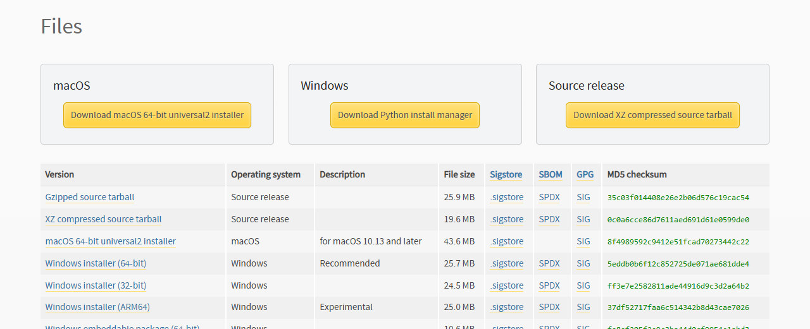
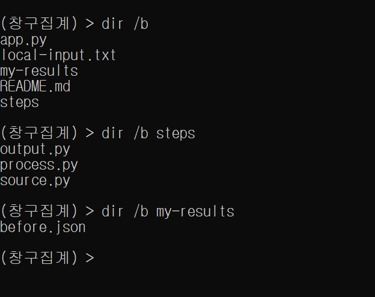

수업 일정14:10 첫 요청 · 14:50 첫 실행
- 13:30–13:55
- 수학 난제, AGI, 반례 실습
- 13:55–14:10
- 설치와 Team 연결 확인, 입력·처리·결과 설계
- 14:10–14:40
- 내 도구 첫 버전 만들기
- 14:40–14:50
- 휴식
- 14:50–15:10
- 내 입력으로 첫 실행
- 15:10–15:35
- API로 자료 받기, MCP로 도구 쓰기, 파일 트리와 AI 실행 원리
- 15:35–16:25
- API·MCP·CPU를 실행해 보고 한 프로그램에서 세 연결 확인
- 16:25–16:35
- 휴식
- 16:35–16:50
- RAG 원리와 실습 · 질문에 맞는 문단 찾아 초안과 대조
- 16:50–17:15
- 내 프로그램에 자료 읽기, 근거 검색, 초안 생성 연결
- 17:15–17:30
- 내 프로그램의 업무 결과·검색 출처·연결 장애 확인
13:30–13:55 · 도입
왜 리만 가설이 다시 뉴스가 됐나
2026년 11월 20일, 수학자 레벤트 알푀게(Levent Alpöge)는 Claude와 함께 리만 가설의 증명을 얻었다고 발표했습니다. 알푀게는 단순한 경우에 성립한 두 아이디어를 결합할 방향을 잡았고, Claude가 이를 더 일반적인 경우에 적용하는 데 필요한 중간 결과의 구성을 제안했다고 설명했습니다.
이 발표가 주목받은 데에는 두 가지 이유가 있습니다. 1859년에 나온 리만 가설은 소수 분포의 오차를 설명하는 오래된 문제입니다. 게다가 공개된 결과는 컴퓨터가 검사할 수 있는 약 1,700만 줄의 Lean 증명 코드였습니다. 어떤 정리를 실제로 증명했는지, 그 증명 데이터를 독립된 검사기가 받아들이는지 확인할 수 있었습니다.
- 가설 제시
베른하르트 리만이 제타 함수의 영점과 소수 분포를 연결했습니다.
- 증명 공개
알푀게가 Claude와 작업한 결과를 Lean 라이브러리로 공개했습니다.
- 독립 형식 검증 발표
Lean·Mathlib 팀은 고전적 리만 가설의 명제와 증명을 확인했다고 발표했습니다.

확인 범위 · 11월 25일 확인한 Clay 수학연구소의 공식 문제 페이지에는 Active가 표시됐습니다. 아래에서 원래 명제와 검증 과정을 각각 살펴봅니다.
리만 가설 · 명제
리만 가설은 무엇을 묻는가
소수의 개수를 어림하는 문제에서 시작해, 복소평면에 놓인 영점이 왜 중요한지 연결합니다.
제타 함수와 소수가 만나는 지점
x 이하의 소수 개수를 π(x)라고 씁니다. 소수정리는 x가 커질 때 π(x)의 주된 크기가 x/log x라는 것을 알려줍니다. 실제 개수가 이 근사에서 어느 정도 벗어나는지가 그다음 질문입니다.
제타 함수 ζ(s)는 s의 실수부가 1보다 클 때 자연수 전체에 대해 아래 합을 계산한 값입니다. 각 소수 p에 대해 1 + p−s + p−2s + …를 곱해 전개하면 같은 합이 나옵니다. 모든 자연수가 소수들의 곱으로 유일하게 분해되기 때문입니다. 그래서 자연수 전체를 더한 함수에 소수 정보가 들어 있습니다.
ζ(s) = 1 + 1/2s + 1/3s + …Re(s) > 1
그래프의 가로와 세로는 무엇인가
복소수 s = σ + it에는 실수부 σ와 허수부 t가 있습니다. 가로가 실수부, 세로가 허수부입니다. ζ는 처음 정의한 합이 수렴하는 영역 바깥으로도 일관되게 확장할 수 있습니다. 이 과정을 해석적 연속이라고 합니다. 그림의 색은 각 좌표에서 계산한 복소수 출력의 크기와 위상을 표현합니다.
영점은 출력이 정확히 0인 입력입니다. 음의 짝수 −2, −4, …에도 영점이 있고, 이를 자명한 영점이라고 부릅니다. 그 밖의 영점은 0 < σ < 1인 띠에 있습니다. 그림에서 가로 0보다 약간 오른쪽, 세로 약 ±14.13에서 마주 보는 두 점이 첫 비자명한 영점 쌍입니다. 같은 그림의 s = 1은 값이 발산하는 극점입니다.

실수부 0.5가 소수 분포에 왜 중요한가
소수 p의 거듭제곱 pk가 x 이하일 때마다 log p를 더한 값을 ψ(x)라고 합니다. 이 합은 대체로 x에 가까워지고, 리만의 공식에는 그 차이를 설명하는 영점 항 xρ/ρ가 들어갑니다. ρ = β + iγ의 γ는 진동에, β는 xρ의 크기 xβ에 관여합니다. 임계선에 모든 영점이 있으면 이 정보를 이용해 오차를 더 강하게 제한할 수 있습니다.
ψ(x) = x + O(x1/2 + ε)모든 ε > 0
위 식은 리만 가설과 동치인 표현입니다. ε를 아무리 작게 정해도, 충분히 큰 x에서는 오차가 x1/2 + ε의 일정한 배수 안에 들어간다는 뜻입니다.
가설의 정확한 주장 · 모든 비자명한 영점에서 Re(s) = 1/2입니다. 그림은 좌표가 무엇을 뜻하는지 보여줍니다. 증명은 그 성질이 무한히 많은 영점에 모두 적용된다는 논증입니다.

수업 전 설치 · 13:55 연결 확인
실습을 시작하기 전에 도구를 준비합니다
Windows에서 글자로 명령을 입력하는 창을 엽니다. 여기서 쓸 도구가 PowerShell입니다. Python은 우리가 만든 코드를 실행하고, Claude Code는 Team 계정으로 작업 폴더에서 그 코드를 작성하고 수정할 때 사용합니다.
1. Python과 Claude Code를 설치합니다
Windows 시작 메뉴에서 PowerShell을 엽니다. py -3.12 --version을 입력하고 Enter를 누릅니다. 이 명령은 ‘설치된 Python 중 3.12의 버전을 보여 줘’라는 뜻입니다. claude --version도 같은 방식으로 확인하고 없는 도구만 설치합니다.
winget --version
winget install --id Python.Python.3.12 --exact --source winget
winget install --id Anthropic.ClaudeCode --exact --source wingetWinGet을 쓸 수 없다면 Python 공식 다운로드의 Files 표에서 x64 Windows의 Windows installer (64-bit)를 받습니다. 파일을 열어 Install Now로 설치합니다. 같은 3.12 계열이 이미 설치돼 있으면 설치 창에 Upgrade Now가 표시될 수 있으니 먼저 버전을 확인합니다.



Git으로 변경 이력을 확인하거나 Claude Code에서 Git Bash를 사용할 때는 winget install --id Git.Git --exact --source winget을 실행합니다. 설치 뒤 PowerShell을 다시 열고 버전을 확인합니다.
2. 새 PowerShell에서 버전과 Team 계정을 확인합니다
py -3.12 --version
claude --version
claude auth status --text
로그인이 필요하면 claude auth login으로 공식 로그인 화면을 열어 본인 Team 계정을 선택합니다. 설치는 claude --version, 계정 연결은 claude auth status, 실제 응답은 요청을 한 번 보내 각각 확인합니다.

Not logged in입니다.Claude Code의 CLI 옵션
CLI는 도구를 글자로 조작하는 방식입니다. 명령 뒤에 붙여 동작을 고르는 말을 ‘옵션’이라고 합니다. 아래의 --output-format json은 다른 프로그램이 결과를 읽을 수 있도록 항목 이름과 값을 짝지어 달라는 뜻입니다.
| 명령 또는 옵션 | 하는 일 |
|---|---|
claude | 현재 폴더에서 대화형 제작 세션을 엽니다. |
-p | 요청을 처리하고 출력을 남긴 뒤 종료합니다. |
--output-format json | result와 오류 여부를 프로그램이 읽을 수 있게 반환합니다. |
--json-schema | 프로그램이 받을 필드와 자료형을 지정합니다. 형식과 내용은 각각 확인합니다. |
--max-turns 2 | 한 요청에서 에이전트가 이어서 작업하는 턴의 수를 제한합니다. |
$instruction = Read-Host '요청을 입력하세요'
claude -p --output-format json --max-turns 2 -- "$instruction"3. 연결 실습 파일과 Python 환경을 준비합니다
연결 실습 ZIP을 풀고 requirements.txt가 있는 폴더에서 PowerShell을 엽니다. 첫 줄은 실습 전용 Python 환경을 만듭니다. 둘째 줄은 다른 프로그램의 도구를 찾아 호출할 때 쓸 MCP 코드를 설치합니다. 마지막 줄에서 이 환경의 Python 버전을 확인합니다.
py -3.12 -m venv .venv
.\.venv\Scripts\python.exe -m pip install -r requirements.txt
.\.venv\Scripts\python.exe --version
requirements.txt와 input.txt가 함께 보이는 위치에서 작업합니다. 마지막 줄은 이 폴더의 Python 버전입니다.4. Hugging Face에서 모델 파일을 받습니다
Hugging Face는 모델을 배포하는 사이트입니다. 여기서 받는 파일에는 모델이 학습한 숫자들이 들어 있습니다. 내 PC의 계산 장치인 CPU에서 그 숫자로 문장을 생성하도록 실행하는 프로그램이 llama.cpp입니다. 그래서 모델 파일과 실행기를 함께 준비합니다.
Windows CPU 실행기와 Qwen2.5 0.5B 다운로드 안내에서 실행기 ZIP을 풉니다. Hugging Face의 Qwen 공식 저장소에서는 Files → qwen2.5-0.5b-instruct-q4_k_m.gguf → Download 순서로 누릅니다. 받은 약 491MB의 모델 파일을 llama-server.exe와 같은 폴더에 둡니다.

q4_k_m.gguf로 끝나는 파일을 엽니다.
13:55–15:10
내 업무 도구의 첫 버전을 만듭니다
입력 하나와 그 입력에서 나와야 할 결과 하나를 바로 정할 수 있는 자기 업무를 고릅니다. 첫 실행은 실제로 다시 열 수 있는 작은 프로그램 하나를 기준으로 합니다.
작업 폴더를 열고 연결을 확인합니다
탐색기에서 나만의 작업 폴더를 열고 주소 표시줄에
powershell을 입력합니다. 현재 터미널의 위치가 Claude Code가 처음 작업하는 폴더가 됩니다.Get-Location claude표시된 경로가 내가 작업할 폴더인지 확인합니다. 설치와 계정 상태는 실습 환경 준비에서 확인합니다.
5분 동안 입력·처리·결과를 적습니다
평소 받는 자료와 최종적으로 확인하는 값 하나를 고릅니다. 세 줄을 채운 뒤 공개 또는 가상 자료로 실제 투입할 입력 하나를 준비합니다.
- 입력
- 프로그램이 받을 자료와 그 형식
- 처리
- 반복하던 일 가운데 자동으로 처리할 규칙
- 결과
- 받고 싶은 값과 결과가 맞는지 판단할 기준
창구별 건수를 집계하는 사람이라면 - 입력서울창구 7
인천창구 5
서울창구 3 - 업무 규칙같은 창구의 건수를 더합니다.서울 7 + 3
- 완료 기준서울 10건 · 인천 5건합계 15건
앞서 연 Claude Code에 이 세 가지를 담은 첫 요청을 보냅니다. 코드를 한 가지 일씩 묶어서 이름으로 실행할 수 있게 만든 단위를 함수라고 합니다. ‘자료 읽기’, ‘업무 규칙 적용’, ‘결과 저장’에 해당하는 파일과 함수 이름을 프로그램의 안내문인
README.md에 적어 둡니다.첫 요청 예문
이 폴더에 Windows Python 3.12로 실행하는 내 업무 도구를 만들어줘. 입력은 [입력], 처리는 [처리], 결과는 [결과]야. app.py에 실행 순서를 두고, steps/source.py에 자료 읽기, steps/process.py에 업무 규칙, steps/output.py에 결과 저장을 두거나 이미 쓰던 구조가 있다면 각 역할을 맡는 파일과 함수를 알려줘. 먼저 UTF-8 검증 입력으로 실행해줘. 자료 읽기 단계의 반환값 형식, 업무 규칙의 입력과 반환값, 저장할 파일을 README.md에 적어줘. 내 검증 입력을 넣어서 실제로 실행하고 결과와 실행 명령을 알려줘.결과가 저장되는 데까지 실행합니다
Claude Code가 알려준 명령으로 내 도구를 실행합니다. 출력 화면과 저장한 파일을 열어, 내가 적은 성공 기준과 하나씩 대조합니다. 오후에 같은 입력으로 비교할 수 있도록 입력 원본, 처음 받은 결과, 실행 명령을 한 곳에 저장합니다.
값이 예상과 다르면 실제 입력, 나온 값, 예상했던 값을 함께 주고 그 값이 처음 달라진 단계를 수정합니다.
app.py가 steps 폴더의 읽기·집계·저장 함수를 부릅니다. 실제 작업 폴더의 목록입니다.
before.json을 다시 열었습니다. 화면과 파일에서 모두 합계 15건을 확인할 수 있습니다.

15:35–15:47 · 12분
실습 1 · API로 내 입력을 읽습니다
첫 버전은 파일에서 자료를 읽었습니다. 연결 모드에서는 이 서버가 돌려주는 text를 같은 업무 규칙에 넘깁니다. 첫 실행에 보관한 검증 입력으로 확인합니다.
먼저 자료를 제공할 서버를 켜고, 다음 창에서 그 주소로 조회를 요청합니다. 주소와 응답 읽는 법 다시 보기
준비한 내 입력을 엽니다
압축을 푼
hug4-connections에 있는input.txt에 자기 도구의 실습용 텍스트를 400자 이내로 입력하고 UTF-8로 저장합니다. 원문에서 모델이 찾아야 할 내용이나 기대하는 결과도 한 문장으로 적어 둡니다.PowerShell 1에서 API 서버를 켭니다
실습 폴더를 탐색기로 열고 주소 표시줄에
powershell을 입력합니다. 아래 명령 실행 후 8766번 주소가 나오면 창을 켜 둡니다.py -3.12 api_server.py같은 폴더의 PowerShell 2에서 응답을 읽습니다
첫째 줄은 실습용 호출 코드입니다. 둘째 줄은 PowerShell에서 같은 HTTP 요청을 직접 보내 응답을 확인하는 명령입니다.
py -3.12 inspect_api.py Invoke-RestMethod -Uri 'http://127.0.0.1:8766/input'

GET /input 응답입니다. status에서 파일을 읽었는지 보고 text에서 내용을 확인합니다. 화면의 \n은 원래 파일의 줄바꿈입니다. 중복 줄도 이 단계까지는 그대로 들어옵니다.입력을 읽는 함수입니다. GET /input에서 HTTP 200과 JSON의 status: ok를 확인한 뒤 text를 넘깁니다. 프로그램에서 입력을 목록으로 받고 있었다면 원래 파서에서 텍스트를 목록으로 바꿉니다.
같은 HTTP로 모델에 문장 생성을 요청할 때
생성을 요청할 때는 내용을 담아 POST로 보냅니다. 메시지 앞부분의 헤더는 내용을 어떻게 읽을지 알려 주고, 본문에는 실제 지시와 자료가 들어갑니다. 아래는 모델에 보내는 메시지의 일부를 풀어 쓴 예입니다.
GET http://127.0.0.1:8766/input
파이썬 서버가 반환한 JSON에서 status가 ok이면 text를 읽습니다.
127.0.0.1:8081실행기는 성공 상태를 받은 뒤 choices[0].message.content에 있는 값을 읽습니다. 상태 코드는 HTTP 처리 결과를 알려줍니다. 답의 형식과 내용은 실행기가 다음 단계에서 검사합니다.
같은 HTTP 방식으로 AI 서비스에도 요청할 수 있습니다. Claude Messages API는 POST /v1/messages로 model, messages, max_tokens 등을 받습니다. 서비스 인증은 Team 로그인 상태와 별도로 설정합니다. 오늘은 Team 계정으로 Claude Code를 열고, 직접 조립하는 HTTP 요청은 아래 CPU 모델에서 실행합니다.

16:02–16:20 · 18분
실습 3 · 같은 자료로 CPU 모델을 호출합니다
실행기는 입력 API의 JSON에서 text를 꺼내 내 지시와 묶습니다. 그 요청을 같은 PC 안의 모델 서버에 보내고 생성된 답을 읽습니다.
messages를 모델이 받는 대화 형식으로 바꿉니다.
ID₁ID₂ID₃…K₁,V₁K₂,V₂…+ K새,V새
KV 캐시는 앞서 처리한 토큰과의 관계를 계산할 때 다시 쓰는 값입니다. 추론 중에 캐시와 출력은 바뀌고, 모델 가중치는 고정됩니다.
GGUF는 학습된 가중치와 실행에 필요한 정보를 담는 파일 형식입니다. 실습의 Qwen2.5 0.5B 파일은 약 491MB입니다. Q4_K_M은 가중치를 여러 정밀도로 압축하는 양자화 방식입니다. 실행 중에는 가중치 외에도 현재 입력과 이전 토큰의 계산값을 메모리에 둡니다. 입력 길이를 늘리면 처음 계산하는 일과 캐시 크기가 함께 늘어납니다.
PowerShell 3에서 모델을 띄웁니다
llama-server.exe와.gguf파일이 함께 있는 폴더에서 PowerShell을 엽니다.-ngl 0은 GPU에 모델 레이어를 올리지 않도록 하고,-c 2048은 사용할 컨텍스트 크기,-t 4는 CPU 스레드 설정입니다. 로딩이 끝날 때까지 기다립니다..\llama-server.exe -m .\qwen2.5-0.5b-instruct-q4_k_m.gguf --host 127.0.0.1 --port 8081 -ngl 0 -c 2048 -t 4PowerShell 2에서 자기 업무의 결과를 요청합니다
PowerShell 1의 입력 API를 켜 둔 상태에서 실행합니다.
입력 상태 · ok가 나오면 앞에서 정한 결과를 입력합니다.py -3.12 run_cpu.py요청을 구성한 코드와 실제 답을 대조합니다
run_cpu.py에서 입력을 읽는 부분과messages를 만드는 부분을 찾습니다. 실행 결과의choices[0].message.content아래 문장에서, 원문의 필수 정보가 남았는지와 내가 요구한 형식을 따랐는지 확인합니다. 빠진 값이 있으면 찾아야 할 항목을 지시에 추가하고 다시 실행합니다.

GET은 원문을 가져왔고, 다음 POST는 한 문장 요약을 요청했습니다. 이 실행에서 CPU 모델이 돌려준 답은 ‘접수 문서 3건, 검토 대기 5건’입니다.결과를 저장하기 직전입니다. 계산된 업무 결과의 짧은 표현과 MCP 검토 기준을 8081로 보냅니다. 모델이 답하면 기존 업무 결과와 별도의 초안 필드에 저장합니다. HTTP 503이나 연결 오류가 나면 PowerShell 3의 로딩 상태를 봅니다.

16:41–16:50 · 9분
실습 4 · 문단을 찾아 초안과 원문을 대조합니다
입력 API와 모델 서버가 켜진 상태에서 실습 폴더의 PowerShell 2를 사용합니다. evidence에 들어 있는 두 파일은 이 수업을 위해 만든 가상 작성 안내입니다.
같은 업무 자료로 질문을 바꿉니다
접수 건수와 관련된 기준을 먼저 찾습니다. 다음에는 보완 요청의 기록 방법을 묻습니다. 각 명령 뒤에 저장한 결과를 열어
evidence의 파일명과 문단 번호가 어떻게 달라지는지 확인합니다..\.venv\Scripts\python.exe my_program.py --rag "접수 문서" Get-Content -LiteralPath .\output\rag.json -Encoding UTF8 .\.venv\Scripts\python.exe my_program.py --rag "보완 요청은" Get-Content -LiteralPath .\output\rag.json -Encoding UTF8검색 기록에서 실제 원문으로 돌아갑니다
‘보완 요청은’의 결과에서
file과paragraph를 찾습니다.evidence/02-review.txt를 열어 두 번째 문단과excerpt(검색한 문장)를 대조합니다. 다음으로draft(생성한 초안)를 읽습니다. “사유와 함께 기록한다”는 조건이 들어 있는지, 원문에 없는 기한을 새로 만들었는지 확인합니다.Get-Content -LiteralPath .\evidence\02-review.txt -Encoding UTF8근거를 찾지 못한 경우를 시험합니다
같은 프로그램에
--rag "출장 여비"를 주고 실행합니다. 실습 문서에 일치하는 단어가 없어 모델 호출 전에 멈춥니다. 폴더에 남아 있는rag.json은 직전 성공 결과입니다. 파일 안의query를 확인합니다.

내 실행 결과를 Windows 터미널 원본 화면과 비교하기

검색 점수는 두 글에 같은 단어가 몇 개 있는지 나타냅니다. 프로그램이 기록한 파일명은 모델에 건넨 자료의 위치입니다. 그 문단이 초안의 각 주장을 뒷받침하는지는 사람이 직접 대조합니다.

17:15–17:30 · 15분
실습 6 · 내 도구에서 새 입력과 중단을 확인합니다
기존 업무 결과, 검색한 근거, 모델이 생성한 초안을 차례로 확인합니다. 통과한 입력과 실행 명령을 함께 남깁니다.
| 무엇을 넣을까? | 어떤 결과가 나와야 할까? |
|---|---|
| 4분 · 연결 전후 같은 입력 | 기본 결과와 연결 결과의 업무 값을 대조합니다. 초안에서 잘못 바뀐 내용이 있다면 원문과 나란히 표시합니다. |
| 4분 · 새 근거와 새 입력 | 이미 찾아 본 내 근거 문단에 식별할 단어를 하나 추가해 저장하고 input.txt의 값 하나를 바꿉니다. 새 단어로 RAG를 실행해 저장된 업무 값과 검색 원문이 모두 바뀌었는지 봅니다. |
| 5분 · 근거 없음과 연결 장애 | 문서에 없는 단어로 검색해 이번 초안을 저장하지 않았는지 확인합니다. PowerShell 1에서 Ctrl+C로 API 서버를 닫고 다시 실행해 이번에는 입력 단계에서 멈추는지 확인합니다. |
| 2분 · 실행 기록 보관 | 기본·연결·RAG 명령과 결과 파일을 내 폴더에 남깁니다. PowerShell 3에서 Ctrl+C로 모델 서버를 종료합니다. |


내 프로그램을 기본 모드로 다시 엽니다. API가 꺼진 상태에서도 첫 버전처럼 동작하는지 확인합니다.
원문과 출처
- 리만 가설 · NIST의 제타 함수 정의와 오일러 곱, 영점의 분포, 소수 분포와 오차, Clay 문제 설명
- Lean 검증 · 알푀게의 공개문, Lean·Mathlib 공동 검증 발표, Lean의 명제와 증명
- 제타 함수 원본 그림 · Empetrisor의 Riemann-Zeta-Detail, TomFryers 고해상도 판본. CC BY-SA 4.0 · 원본 그대로 게시.
- Lean 지도 원본 · Jonathan Epstein의 Spine of Levent Alpöge’s Lean proof of the generalized Riemann hypothesis. Apache 2.0 · 원본 그대로 게시.
- 단위거리 · OpenAI 발표, Alon 외의 반례 검토
- P 대 NP · Clay의 미해결 문제, Stephen Cook의 문제 정의
- AI 능력의 수준 · Morris 외의 AGI 평가 틀, 버너 빈지의 특이점 논문
- 모델 요청 · Claude의 도구 호출, 컨텍스트, CLI 구조화 응답, MCP 연결 방식, llama.cpp
- 설치와 CLI · Python 설치 파일, Python Windows 설치 절차, Claude Code 설치, CLI 명령과 옵션, Hugging Face Qwen GGUF 파일 화면
- 연결 원리 · MDN의 API 개념 설명, MCP의 구성과 역할
- 검색 증강 생성 · Lewis 등, Retrieval-Augmented Generation for Knowledge-Intensive NLP Tasks, Microsoft의 검색과 생성 구조 설명
- 연결 실습 · Claude Messages API 요청 규격, Claude Code 도구 등록, MCP 도구 목록과 호출 규격, MCP 전송 방식, llama.cpp 서버 경로와 옵션, 추론과 KV 캐시


실행 화면 캡처에는 확인용 텍스트를 사용했습니다.